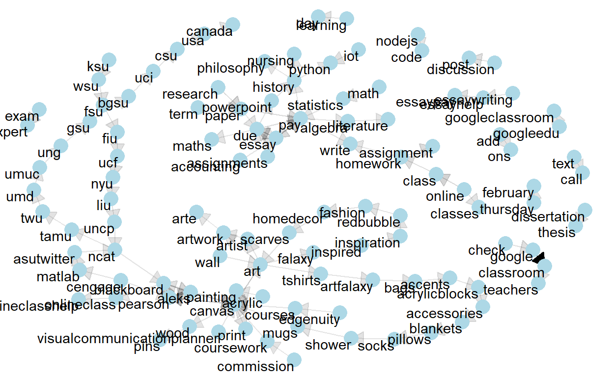
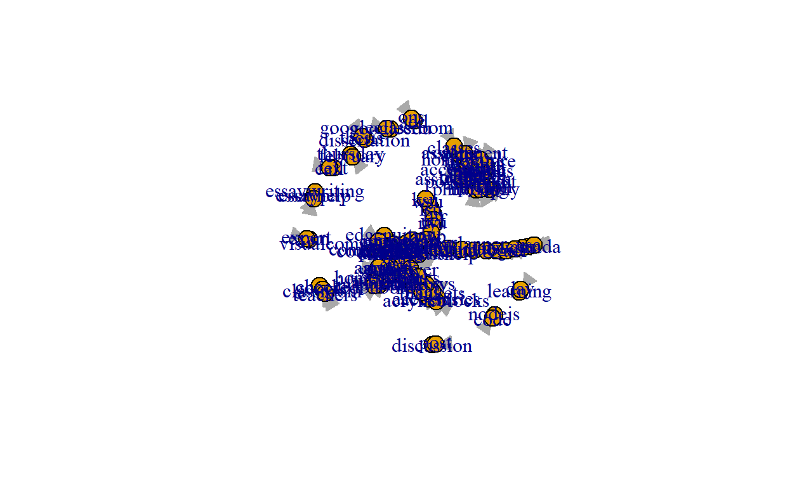
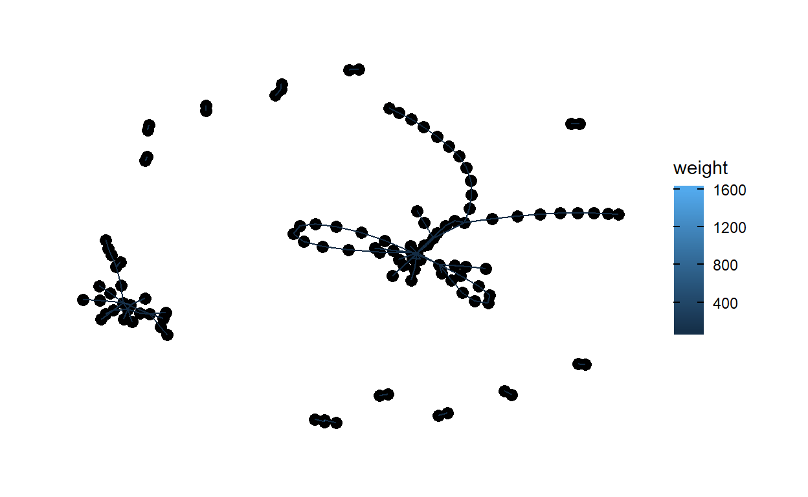
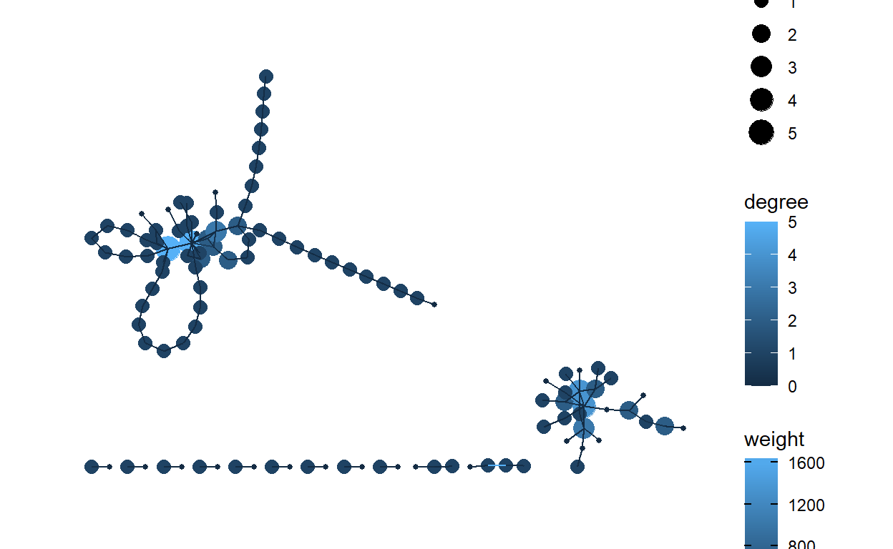
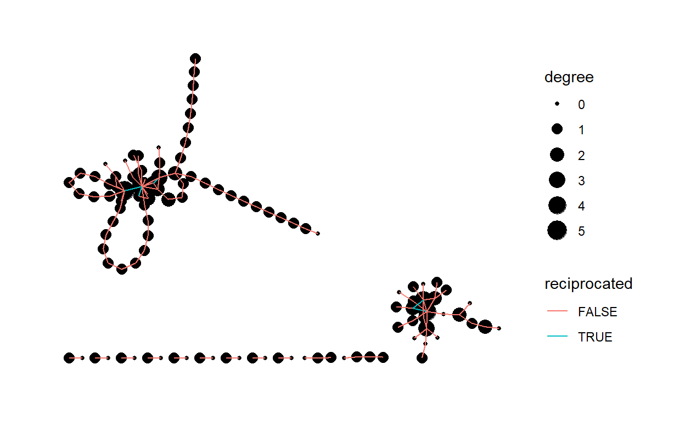
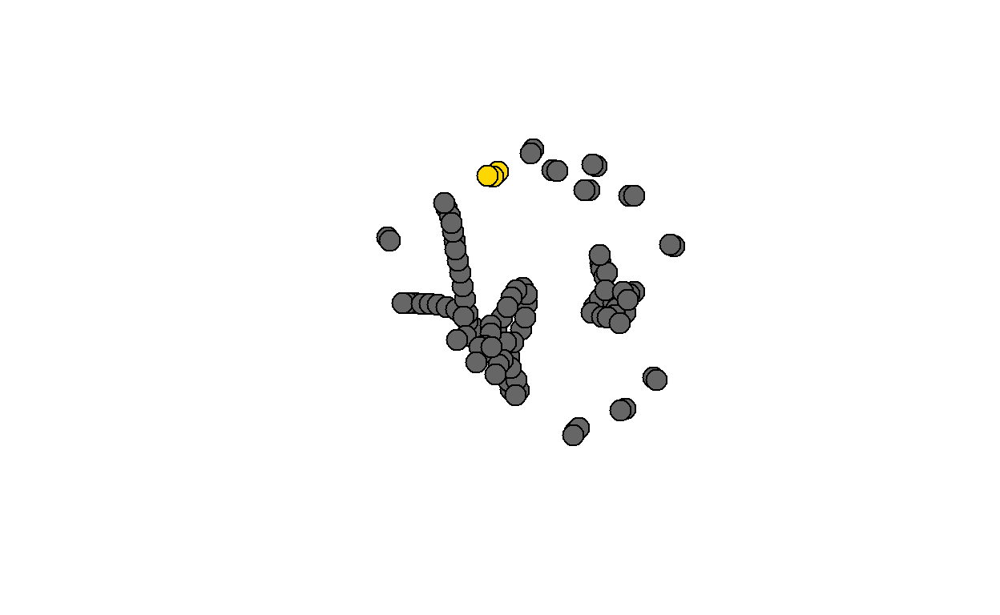
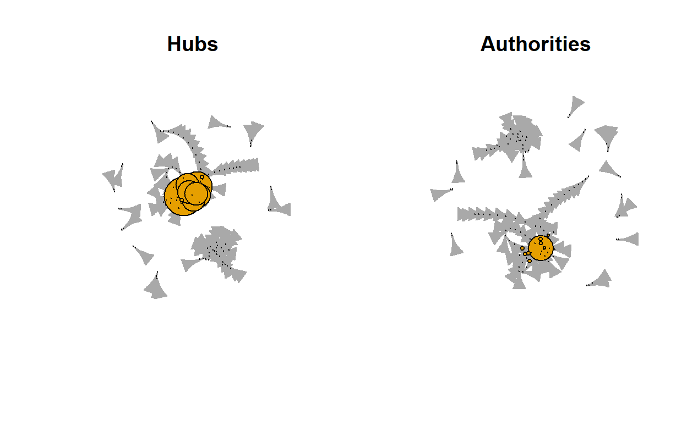
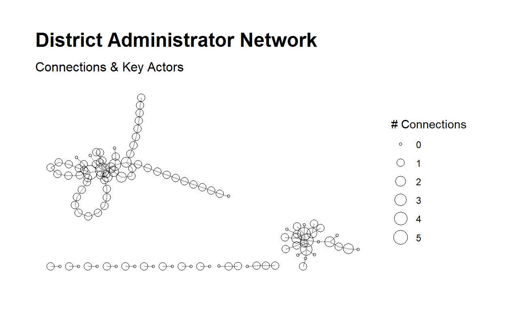

1. PURPOSE
1a. Motivation and Focus
We completed a sentiment analysis on four popular *Learning Management Systems (LMS); Google Classroom, Canvas, Moodle, and Blackboard, in a previous case study. We evaluated emotions and sentiment towards each LMS by assessing the most common uniwords. We evaluated strengths and weaknesses by pulling public opinion from the Twitter Resting API.
We will evaluate connections between the most frequent combination of words (Bigrams) through Social Network Analysis. Here we’ll explore this option for the tweets made in English for the 4 LMS previously observed.
Guiding Questions:
- Are there networks from the co-occurrence of Bigrams?
- What does the mathematical analysis of the Bigram network tell us?
1b. Load Libraries
Let’s first load our libraries to read in packages that we will use to answer our questions. We will also create a function called replace_reg() by looking for and deleting strings (nonsense words), numbers, and other manual stop characters and numbers.
Show code
library(tidytext)
library(tidyverse)
library(network)
library(sna)
library(visNetwork)
library(threejs)
library(ndtv)
library(qgraph)
library(splitstackshape)
library(tidyr)
library(stringr)
library(readxl)
library(readr)
# For visualizations
library(vtree)
library(igraph)
library(ggraph)
library(tidygraph)
library(networkD3)
library(ggplot2)
# regex for parsing tweets
replace_reg <- "https?://[^\\s]+|&|<|>|&d2l;|&aristotlemrs;|&aleks;|\bRT\\b"
# Custom Color Palette
my_colors <- c("#05A4C0", "#85CEDA", "#D2A7D8", "#A67BC5", "#BB1C8B", "#8D266E")
2. METHOD
Our initial read-in data frame includes 4521 tweets objects in the text to evaluate. After tokenizing the Bigrams and restructuring the data objects, we will include Bigrams mentioned more than five times. Once tidyed, the data consists of 1407 bigrams left to evaluate with a social network approach.
2a. Read and Restructure Data
- Read in the previously evaluated LMS data for Google Classroom tweets, Blackboard tweets, Canvas tweets, and Moodle tweets.
- Subset columns to pull only index, lms and text columns.
- Visualize the initial number of tweets for each LMS.
Show code

2b. Tidytext and Initiate Bigram
- Using the tidytext and dplyr packages we split the text into tokens creating a table with two-tokens-per-row. The token is under a column called “bigram.”
- Subset the bigram columns by separating and adding two columns “first” and “second.””
- Remove stop words and manual stop words using our str_detect() dictionary and remove words that are not letter strings.
- Group our lms_bigram() to count up the bigrams, summarize keeping only those that appear more than 5 times.
- Visualizing the new numbers for each LMS.
Show code
# split into word pairs
lms_bigrams <- tweets_data2 %>%
mutate(text = str_replace_all(text, replace_reg, "")) %>%
unnest_tokens(bigram, text, token = "ngrams", n = 2)
# remove stop words
lms_bigrams <- lms_bigrams %>%
separate(bigram, into = c("first","second"), sep = " ", remove = FALSE) %>%
anti_join(stop_words, by = c("first" = "word")) %>%
anti_join(stop_words, by = c("second" = "word")) %>%
filter(str_detect(first, "[a-z]") &
str_detect(second, "[a-z]"))
#count up new birgams and create a new column called n only keep more than 5 counts
lms_bigrams_count <- lms_bigrams %>%
group_by(lms, bigram, first, second)%>%
summarise(n=n())%>%
filter(n >= 5)%>%
arrange(-n)%>%
ungroup()
#visualize new number of rows (previously counting tweets)
vtree(lms_bigrams_count, "lms", horiz=FALSE, palette = 4, sortfill = TRUE, title="Bigram LMS Tweets Data")

3. EXPLORE
3a. Subset Coloumns and visualize Bigrams
- Select first, second and n columns create lms_bigram_tble data frame to use later in the Social Network Analysis.
- Visually inspect Bigrams mentioned more than 35 times through an igraph to observe any communities in the network.
Show code
# Rename and reorder columns (so we can make the graphs more easily)
lms_bigram_tbl <- lms_bigrams_count %>%
dplyr::select(c('first','second', 'n'))
bigram_graph <- lms_bigram_tbl %>%
filter(n > 35) %>%
graph_from_data_frame()
set.seed(123)
a <- grid::arrow(type = "closed", length = unit(.15, "inches"))
ggraph(bigram_graph, layout = "fr") +
geom_edge_link(aes(edge_alpha = n), show.legend = FALSE, arrow = a) +
geom_node_point(color = "lightblue", size = 5) +
geom_node_text(aes(label = name), vjust = 1, hjust = 1) +
theme_void()

4. MODEL
To evaluate Social Network for Bigrams we will create a igraph and table graph class network. This will easily allow for visualizing the connections and explaining the network mathmatically.
4a. Edges and Nodes
Nodes are the unique words - each word has an identification ID edges are the bigrams, meaning that they show how frequently we find a combination of 2 words (represented by their unique ID).
- Create a source for the first word of the bigram
- Create a destination for the second word of the bigram
- Create Nodes
- Create Edges
- Select only to, from and weight
- Inspect i. head of Node and ii. head of Edges and save for later use.
Show code
#filter to Bigrams that are mentioned more than 35 times.
lms_df <- lms_bigram_tbl %>%
filter(n > 35)
# Distinct first (part of bigram)
sources <- lms_df%>%
distinct(first) %>%
rename(label = first)
# Distinct second (part of bigram)
destinations <- lms_df %>%
distinct(second) %>%
rename(label = second)
#NODES AND EDGES BELOW:
# ----- NODES -----
# Unique Items + create unique ID
nodes <- full_join(sources, destinations, by="label") %>% rowid_to_column("id")
# ----- EDGES -----
# Adds unique ID of Item 1 to data
edges <- lms_df %>%
left_join(nodes, by = c("first" = "label")) %>%
rename(from = id)
# Adds unique ID of Item 2 to data
edges <- edges %>%
left_join(nodes, by = c("second" = "label")) %>%
rename(to = id) %>%
rename(weight = n)
# Select only From | To | Weight (frequency)
edges <- edges %>% select(from, to, weight)
- Inspect head of node
# A tibble: 5 x 2 id label <int> <chr> 1 1 google 2 2 canvas 3 3 essay 4 4 pearson 5 5 aleks- Inspect head of edges
# A tibble: 5 x 3 from to weight <int> <int> <int> 1 1 83 1688 2 2 4 309 3 3 9 232 4 3 10 187 5 4 7 1824b. igraph
- Create igraph
- Inspect Edges and Vertices of net1 object ii.Inspect the igraph visually.
Show code
# Create network net1 <- graph_from_data_frame(d = edges, vertices = nodes, directed = TRUE)- The edges of the “net” object
Show code
E(net1) # The edges of the "net" object+ 115/115 edges from f4684d2 (vertex names): [1] 1 ->83 2 ->4 3 ->9 3 ->10 4 ->7 5 ->2 6 ->13 7 ->5 [9] 8 ->11 9 ->10 4 ->5 10->3 11->10 12->89 13->14 14->90 [17] 15->2 16->72 17->91 2 ->92 18->93 19->1 5 ->7 20->26 [25] 21->20 22->25 23->21 24->94 25->33 26->27 27->29 28->32 [33] 29->30 30->31 31->28 10->95 2 ->71 32->66 16->51 2 ->16 [41] 33->28 34->16 35->37 36->39 37->36 38->70 39->41 40->2 [49] 28->7 41->43 42->40 43->42 44->48 16->50 45->46 46->49 [57] 47->44 48->45 49->16 50->38 51->47 52->96 2 ->75 53->97 [65] 6 ->98 54->99 55->2 56->55 9 ->59 57->100 58->3 22->4 [73] 14->95 11->9 59->53 60->10 61->101 62->63 63->2 64->102 + ... omitted several edges- The vertices of the “net” object
Show code
V(net1) # The vertices of the "net" object+ 112/112 vertices, named, from f4684d2: [1] 1 2 3 4 5 6 7 8 9 10 11 12 13 14 15 16 [17] 17 18 19 20 21 22 23 24 25 26 27 28 29 30 31 32 [33] 33 34 35 36 37 38 39 40 41 42 43 44 45 46 47 48 [49] 49 50 51 52 53 54 55 56 57 58 59 60 61 62 63 64 [65] 65 66 67 68 69 70 71 72 73 74 75 76 77 78 79 80 [81] 81 82 83 84 85 86 87 88 89 90 91 92 93 94 95 96 [97] 97 98 99 100 101 102 103 104 105 106 107 108 109 110 111 112- Visualize the igraph
- We reduced the Bigrams to only include more than 35 mentions but the visualization is cluttered with the names of the bigrams and hard to read.
Show code

4c. Convert to Table Graph class
- Inspect class() of object networks.
- Convert to table graph.
+We can see that net1 is a class of igraph. TO go further we need to change to table graph class, this will add a weight column. Second, we will visualize our added weight column.
- net1 class
Show code
#check class class(net1)[1] "igraph"- Convert to table graph and inspect class.
Show code
#update to table graph for weight net2 <- as_tbl_graph(net1) class(net2)[1] "tbl_graph" "igraph"- Visualize the table graph with weight
Show code
ggraph(net2, layout = "fr") + geom_node_point(size = 3) + geom_edge_link(aes(colour = weight)) + theme_graph()
4d. Describe the Network Mathematically
- Network Size
- Centrality
- Density
- Reciprocity
- Transitivity
- Diameter and Density
- Mean
- Hubs and Authorities
a. Network Size
The size of a network centers around the number of nodes and edges in a network. Here we can see: - i. number of vertices is 112. - ii. number of edges is 115.
- number of vertices
Show code
#number of vertices gorder(net2)[1] 112- number of edges
Show code
#number of edges gsize(net2)[1] 115b. Centrality
Degree measures the extent to which relations are focused on one or a small set of actors. Degree refers to the number of ties an actor either sends (out-degree), receives (in-degree), or in the case of a non-directed network or both sent and received in a directed network, simply just “degree” for all actors to which one is connected.
- All centrality Score of 0.054.
- In-degree centrality score of 0.072.
- Out-degree centrality score of 0.036.
The Bigram network seems to have a very decentralize graph, slightly more centralized around in-degree.
- Calculate “all” degree centrality score and run centrality - “all”
and add to out network
Show code
#calculate all-degree score centr_degree(net2, mode = "all")$res [1] 2 14 5 4 4 2 6 1 7 8 4 1 2 3 2 8 2 1 1 2 2 [22] 2 1 1 2 2 2 4 2 2 2 2 2 1 2 2 2 2 2 2 2 2 [43] 2 2 2 2 2 2 2 2 2 1 5 1 2 1 2 1 2 2 1 1 2 [64] 1 2 2 2 2 2 2 3 2 1 1 2 1 2 3 2 2 1 2 2 1 [85] 1 2 1 1 1 1 1 1 1 2 2 1 1 1 1 1 1 1 1 1 1 [106] 1 1 1 1 1 1 1 $centralization [1] 0.05429754 $theoretical_max [1] 24642Show code
#activate the actors degree net2 <- net2 |> activate(nodes) |> mutate(degree = centrality_degree(mode = "all"))- Calculate “in” degree centrality score and run centrality - “in” and
add to out network
Show code
#calculate in-degree score centr_degree(net2, mode = "in")$res [1] 1 9 3 2 2 0 3 0 3 4 2 0 1 1 0 3 1 0 0 1 1 0 0 0 1 1 1 2 1 1 1 1 [33] 1 0 1 1 1 1 1 1 1 1 1 1 1 1 1 1 1 1 1 0 2 0 1 0 1 0 1 1 0 0 1 0 [65] 1 1 1 1 1 1 2 1 0 0 1 0 1 2 1 1 0 1 1 0 0 1 0 0 1 1 1 1 1 2 2 1 [97] 1 1 1 1 1 1 1 1 1 1 1 1 1 1 1 1 $centralization [1] 0.07183076 $theoretical_max [1] 12432Show code
#activate the actors degree net2 <- net2 |> activate(nodes) |> mutate(degree = centrality_degree(mode = "in"))- Calculate “out” degree centrality score and Run centrality - “out”
and add to out network.
Show code
#calculate out-degree score centr_degree(net2, mode = "out")$res [1] 1 5 2 2 2 2 3 1 4 4 2 1 1 2 2 5 1 1 1 1 1 2 1 1 1 1 1 2 1 1 1 1 [33] 1 1 1 1 1 1 1 1 1 1 1 1 1 1 1 1 1 1 1 1 3 1 1 1 1 1 1 1 1 1 1 1 [65] 1 1 1 1 1 1 1 1 1 1 1 1 1 1 1 1 1 1 1 1 1 1 1 1 0 0 0 0 0 0 0 0 [97] 0 0 0 0 0 0 0 0 0 0 0 0 0 0 0 0 $centralization [1] 0.03579472 $theoretical_max [1] 12432Show code
#activate the actors degree net2 <- net2 |> activate(nodes) |> mutate(degree = centrality_degree(mode = "out"))- Visualize Centrality degree
Show code
#Inspect degree visually ggraph(net2) + geom_node_point(aes(size = degree, color = degree)) + geom_edge_link(aes(color = weight)) + theme_graph()
c. Density
We can see that we have a very low density at 0.0093. The closer this number is to 1.0, the denser the network. It appears that out network does not have very many ties.
Show code
#calculate edge density graph.density(net2)[1] 0.009250322d. Reciprocity
Reciprocity reveals the direction through which resources in networks flow between dyads and whether or not it flows in both directions.
- Calculate reciprocity.
- View reciprocity between dyads.
- Inspect reciprocity Visually.
The reciprocity of 0.087 implies that response between actors with positive action is low.
- Calculate reciprocity
Show code
#calculate reciprocity reciprocity(net2)[1] 0.08695652- View table graph reciprocity between actors.
Show code
net2 <- net2 |> activate(edges) |> mutate(reciprocated = edge_is_mutual()) net2# A tbl_graph: 112 nodes and 115 edges # # A directed simple graph with 13 components # # Edge Data: 115 x 4 (active) from to weight reciprocated <int> <int> <int> <lgl> 1 1 83 1688 FALSE 2 2 4 309 FALSE 3 3 9 232 TRUE 4 3 10 187 TRUE 5 4 7 182 FALSE 6 5 2 170 FALSE # ... with 109 more rows # # Node Data: 112 x 3 name label degree <chr> <chr> <dbl> 1 1 google 1 2 2 canvas 5 3 3 essay 2 # ... with 109 more rows- Visualize the reciprocity
Show code
ggraph(net2) + geom_node_point(aes(size = degree)) + geom_edge_link(aes(color = reciprocated)) + theme_graph()
e. Transitivity
Transitivity focuses on triads, or any “triple” of actors. Transitivity is connected to actors’ tendencies to divide into exclusive subgroups or cluster over time, especially around positive relations such as friendship.
Transitivity of 0.105
Show code
#calculate transitivity transitivity(net2)[1] 0.1052632f. Diameter and Distance
A network diameter is the longest geodesic distance (length of the shortest path between two nodes) in the network.
View diameter.
Inspect diameter visually.
Diamter calculation
Show code
diam <- get_diameter(net2, directed=T) diam+ 4/112 vertices, named, from f4684d2: [1] 19 1 83 109- Inspect diameter visually.
Show code

g. Mean Distance
The average path length, measures the mean distance between all pairs of actors in the network.
- Calculate mean distance
Show code
#calculate the mean distance mean_distance(net2)[1] 6.883668h. Hubs and Authorities
Hubs expect to contain large number of outgoing links and authorities get many incoming links from hubs.
The graphical visualization of our network seems to have very little coming into authorities from the Hubs.
- Inspect Hubs and Authorities visually.
Show code

# A tbl_graph: 112 nodes and 115 edges # # A directed simple graph with 13 components # # Edge Data: 115 x 4 (active) from to weight reciprocated <int> <int> <int> <lgl> 1 1 83 1688 FALSE 2 2 4 309 FALSE 3 3 9 232 TRUE 4 3 10 187 TRUE 5 4 7 182 FALSE 6 5 2 170 FALSE # ... with 109 more rows # # Node Data: 112 x 4 name label degree size <chr> <chr> <dbl> <dbl> 1 1 google 1 2 2 2 canvas 5 14 3 3 essay 2 5 # ... with 109 more rowsShow code
ggraph(net2,layout = "stress") + geom_edge_link0(aes(),edge_colour = "grey66") + geom_node_point(aes(size = degree),shape = 21) + geom_node_text(aes(filter = size >= 26, label = name), family="serif") + scale_size(range = c(1,6)) + theme_graph() + theme(legend.position = "right") + labs(size = "# Connections") + labs(title = "District Administrator Network", subtitle = "Connections & Key Actors")
5. COMMUNICATE
Purpose - The purpose of the case study is to look at the **social network* of Bigrams from a Tweet data set pulled previously on Sentiment for four popular Learning Management Systems(LMS); Google Classroom, Canvas, Moodle, and Blackboard. Understanding how information is shared within the network is important to understand for why a LMS may be mentioned more than another LMS on Twitter.
Methods - For this independent analysis I explored tweet Bigrams, Social Networks, and Network Analysis Mathematically.
Findings - The LMS, Google Classroom, Canvas, Moodle, and Blackboard did not seems to have a very good flow of information.
The words are paired by co-occurrence. by networks. ++ Canvas being a top network.
A slightly higher In-Degree connection.
The authorities did not receive very much coming from the Hubs.
Discussion - Bigrams network might show the general idea of the content of the information gathered in twitter posts. Insights from a case study like this may be used to guide Public and Private organizations looking to monitor how information regarding the product is transmitted. A Bigram analysis from collected Tweets may show terms that may not be identical to other analysis. We did not include retweets within out data. I suggest leaving retweets in and evaluating 2 LMS at a time to see if the passing of information within a network is higher.
References:
Hachaj, T., & Ogiela, M. R. (2018, October). What Can Be Learned from Bigrams Analysis of Messages in Social Network?. In 2018 11th International Congress on Image and Signal Processing, BioMedical Engineering and Informatics (CISP-BMEI) (pp. 1-4). IEEE.
- Visualize the reciprocity
- View table graph reciprocity between actors.
- Visualize Centrality degree
- Calculate “out” degree centrality score and Run centrality - “out”
and add to out network.
- Calculate “in” degree centrality score and run centrality - “in” and
add to out network
- number of edges
- Visualize the table graph with weight
- Convert to table graph and inspect class.
- The vertices of the “net” object
- Inspect head of edges